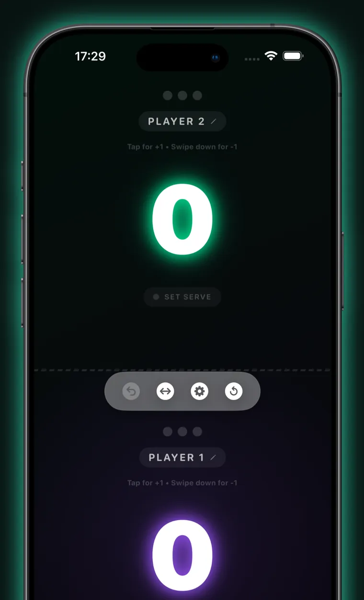
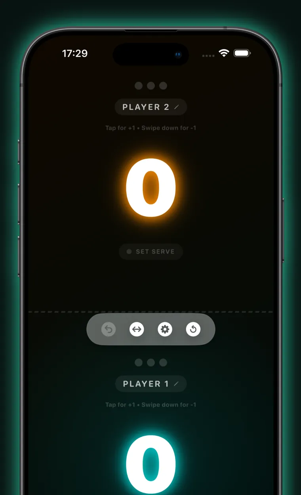
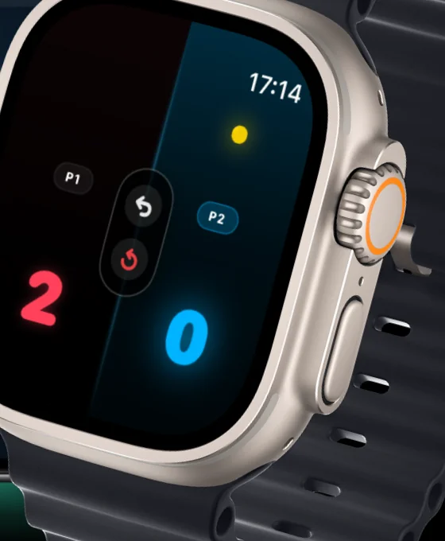
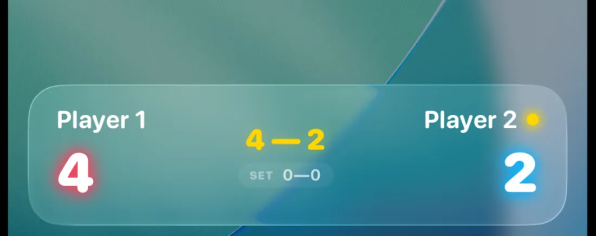
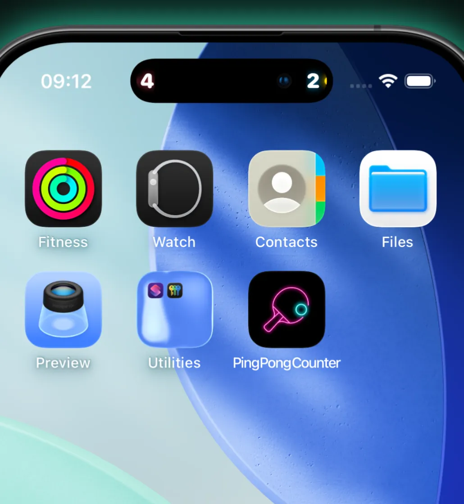
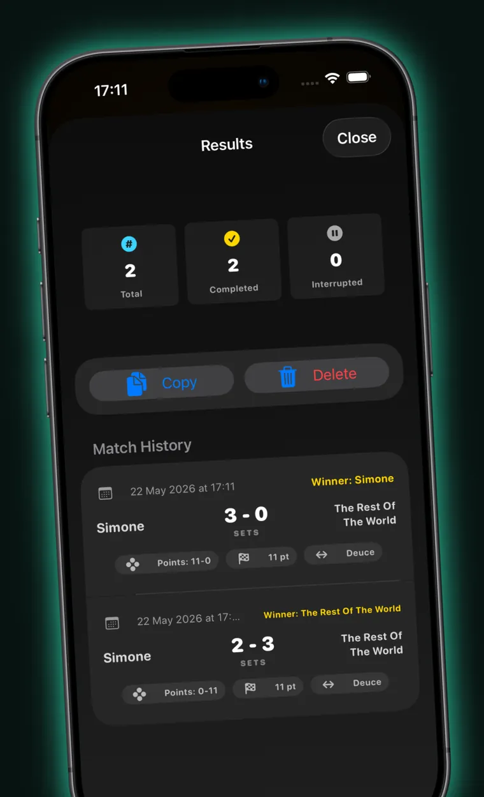

iPhone · iPad · Apple Watch
Stop arguing
about the score.
Ping Pong Counter is the free table tennis scoreboard for iPhone, iPad and Apple Watch.
Ping Pong Counter keeps the score, tracks whose serve it is under ITTF 11-point and 21-point rules, handles singles and doubles, announces the score out loud, and shows the live score on your Lock Screen. It works fully offline, has no ads, no subscription and no account, and collects no data.
Free · No ads · No account · No tracking · iOS 17 or later
Free online table tennis scoreboard
Match won by
Player 1
3–0
Tap a side to score · Undo takes the last point back
This scoreboard runs the same rules engine as the app — serve rotation, deuce and set changes included. Nothing you tap here leaves your browser.
- 0ads, ever
- 0trackers
- 0accounts
- 11/21ITTF points
- 30steps of undo
Scoring
How do you keep score in table tennis?
Tap the half of the screen belonging to whoever won the rally. That is the entire interface. The number grows to fill the screen so both players can read it from opposite ends of the table, and a glowing dot always marks who serves next.
- Tap to score. Each player owns half the screen — top and bottom in portrait, left and right in landscape.
- Swipe down to correct. A downward swipe on a half takes a point back off that player.
- Undo up to 30 steps. Undo restores the score, the sets, the serve and the rally log together, not just the number on screen.
- The serve is never in doubt. A pulsing dot marks the server; tap it to hand the serve over if a rally was misplayed.
- Set point and match point light up. The half of the player one rally from the set gets a halo.
- The screen stays awake between rallies, and a match timer runs from the first point.

Style
Three neon palettes, and the whole app follows
Pick a palette in Settings and it drives everything: the scoreboard, the statistics charts, the shareable result card, the Home Screen widget, the Lock Screen Live Activity and the Dynamic Island. The scoreboard at the top of this page carries the same three palettes — try them.

Néon Classic — red & blue — is the default, and it is what the scoreboard on this page starts with.
The app is dark all the way through, by design: a bright scoreboard at the end of a badly lit table is unreadable.
Rules engine
Does it follow real table tennis rules?
Yes. Ping Pong Counter applies ITTF serving and scoring rules automatically, and it lets you bend them when you are playing in an office kitchen rather than a league fixture.
11 (standard) or 21 (classic) with one tap, or any target from 1 to 99 for house rules.
A single set, first to 3 sets, or first to 5 sets.
Win by two points, on by default. Switch it off and the set ends the moment someone reaches the target.
The serve changes every 2 serves, or every 5 for a 21-point game.
Once both players are one point short of the target, serves shorten to one each — counted correctly, so undo never desynchronises it.
The player who did not open the previous set serves first in the next one, per ITTF.
The four-seat cycle — server, receiver, server's partner, receiver's partner — applied automatically, with the individual server named on screen.
Tap the serve badge to hand the serve to the other side; the rotation is rewritten so the fix survives every following point.
Two things the app deliberately leaves to you: changing ends is a manual button rather than an automatic switch, and the deciding-set receiver-reversal rule is not modelled, because it is inseparable from that change of ends.
Doubles
Does the app support doubles?
Yes — and it solves the part of doubles that actually goes wrong. Name all four players, choose who opens the service, and the app tracks the rotation from there: the current server is highlighted, the receiver is outlined, and the spoken umpire, the Lock Screen and the Apple Watch all name the individual at the table rather than just the pair.
- 1Server
- 2Receiver
- 3Server's partner
- 4Receiver's partner
Between sets the pair that received first serves first — handled for you. If the rotation does drift because a rally was misplayed, tapping the serve badge nudges it back one seat at a time.
Apple Watch
Can an Apple Watch keep the ping pong score?
Yes. Ping Pong Counter includes a native Apple Watch app that talks to your iPhone in both directions. Score from your wrist and the phone propped at the end of the table updates immediately — and the other way round.
- Tap and swipe on the wrist. The same gestures as the phone, with their own haptics.
- Or use the Digital Crown. Roll it forward to give a point to whoever is serving — no aiming at a small screen — and back to undo.
- Undo and reset without touching the phone.
- Doubles server badge names the individual serving, because a glowing half only identifies the pair.
Worth being straight about: the Watch app is a remote control for your iPhone, not a standalone scoreboard. It needs the phone nearby.

Lock Screen & Home Screen
Can you see the score without picking up your phone?
Yes. A Live Activity puts the running score, the set tally and the serve indicator on your Lock Screen and in the Dynamic Island for the length of the match — and its +1 and undo buttons work, so you can score a rally without unlocking anything.


- Home Screen widget. Small and medium sizes show the match in progress with a LIVE badge, or the last final result. It refreshes on every point.
- Ask Siri. “What's the score in Ping Pong Counter” reads back the score and who is serving, without opening the app.
- A spoken umpire. An optional voice calls the score after every point and announces deuce, set point, match point and the winner — ducking your music while it speaks.
History & statistics
Does it remember your matches?
Every match is archived automatically when you reset the board — including the ones you abandoned halfway. Each record keeps its set-by-set breakdown, its duration, and the rules it was actually played under, so your history stays honest after you change the settings.
- A saved roster. Store the people you play against once and reuse them; each keeps a running record.
- Head-to-head. Win–loss and sets won against every other saved player.
- Streaks and win rates, a 30-day activity chart, a leaderboard, and points for and against.
- Rally-by-rally detail. A momentum line for each set, a strip showing who won each rally, and the longest unbroken run.
- Export it. CSV for a spreadsheet, JSON for everything including the rally logs — or share a single match as a square result card.
- Optional iCloud sync. History and roster follow you across your own devices, merged by match so nothing is lost if two devices both record offline.

Scope
What Ping Pong Counter does — and what it doesn't
It is a scoreboard, not a tournament platform. Here is the honest line between the two, so you can tell in ten seconds whether it is the app you need.
It does
- Score singles and doubles
- 11 or 21 points, or any target from 1 to 99
- Single set, first to 3, or first to 5
- Automatic ITTF serve rotation and deuce
- Native Apple Watch app
- Lock Screen Live Activity with working buttons
- Home Screen widget (small and medium)
- Spoken umpire that calls the score
- Match history, stats and head-to-head
- CSV and JSON export, plus a share card
- Optional iCloud sync of history and roster
- Full VoiceOver support
- Work entirely offline
It doesn't
- Run tournaments, brackets or leagues
- Score automatically from a camera or sensors
- Share a live score with spectators or a second device
- Cast to a TV over AirPlay
- Track shots, spin or placement
- Offer accounts, friends or online leaderboards
- Show Lock Screen or StandBy widgets
- Provide watch complications
- Let you edit or hand-enter a past match
- Support anything below iOS 17 or watchOS 10
- Cost anything, now or later
- Collect a single byte of data about you
Enjoy the game without thinking about the score
Free, with no ads, no subscriptions, no accounts and no tracking.
Questions
Questions people ask
Last updated: 4 August 2026
Is Ping Pong Counter free?
Yes. Ping Pong Counter is completely free, with no ads, no subscription and no in-app purchases. There is no account to create and no trial period. Every feature — Apple Watch scoring, Live Activities, the spoken umpire, match history and iCloud sync — is included from the moment you install it.
Can an Apple Watch keep the table tennis score?
Yes. Ping Pong Counter includes a native Apple Watch app that syncs with your iPhone in both directions. Tap your wrist or roll the Digital Crown to score a point and the iPhone scoreboard updates immediately, so you can leave your phone propped at the end of the table during play.
Does Ping Pong Counter work offline?
Yes. Scoring, serve rotation, match history, statistics and the spoken umpire all run on the device with no internet connection required. Optional iCloud sync is the only feature that uses a network at all, and you can leave it switched off entirely.
How does serve rotation work in an 11-point ping pong game?
In an ITTF 11-point game the serve changes every two points, and the first player to reach 11 with a two-point lead wins the set. At 10–10 the game goes to deuce and the serve alternates every single point. Ping Pong Counter applies both rules automatically and shows who serves next.
Does the app support doubles?
Yes. You can name all four players and choose who opens the service, and the app then tracks the doubles rotation — server, receiver, server's partner, receiver's partner — so nobody has to stop and work out whose turn it is. The individual serving is named on screen, on the Lock Screen and on the Watch.
Can I play to 21 points instead of 11?
Yes. Ping Pong Counter supports the modern 11-point format and the classic 21-point format with one tap, or any target from 1 to 99 for house rules. Matches can be a single set, first to 3 sets or first to 5 sets, and the serve can change every 2 or every 5 serves.
Does Ping Pong Counter collect any personal data?
No. The app collects no data at all. There is no account, no analytics, no advertising and no third-party SDK of any kind, and its App Store privacy label reads “Data Not Collected”. Your match history stays in the app's own storage on your device, or in your private iCloud if you switch sync on.
Can I save my match history and export the results?
Yes. Every finished match is saved with its set-by-set score, duration and rally log, and the statistics screen summarises win rates, streaks and head-to-head records. You can export the whole history as CSV or JSON, or share a single match as a square result card.
Does the app announce the score out loud?
Yes. An optional spoken umpire calls the score after every point, names the server, and announces deuce, set point, match point and the winner. It lowers background music while it speaks and is audible even with the ring switch off. You can turn it off in Settings.
Can I see the score on my iPhone Lock Screen?
Yes. A Live Activity shows the current score, the sets won and who is serving on the Lock Screen and in the Dynamic Island. Its +1 and undo buttons work from the Lock Screen itself, so you can score a rally without unlocking the phone or reopening the app.
What devices does Ping Pong Counter work on?
Ping Pong Counter runs on iPhone and iPad with iOS or iPadOS 17 or later, and on Apple Watch with watchOS 10 or later. The iPad makes a good shared scoreboard at the end of the table; the Apple Watch app acts as a remote for the iPhone, so the phone needs to be nearby.
Is Ping Pong Counter accessible with VoiceOver?
Yes. Each half of the scoreboard is a single VoiceOver element that reads the player's name, points, sets won, whether they are serving and whether it is set or match point, and it carries named actions to add a point, remove one, give the serve and edit the name. Reduce Motion is respected throughout.
Support
Get help with Ping Pong Counter
Support is handled in the open, on GitHub, so every request is tracked and you can see what has already been reported and fixed.
What to include
Your device model and iOS or watchOS version, the state of the match when it happened, and the exact action that caused it. If it involves the Apple Watch, say whether the phone was nearby. Please do not put personal information into a public issue.
Response time
Ping Pong Counter is built and maintained by one person in his spare time, so replies are not instant — but every report is read. Bugs that stop a match being scored get looked at first.
Privacy policy
Privacy policy
Last updated: 4 August 2026
Ping Pong Counter collects no data. There is no account, no analytics, no advertising and no third-party SDK in the app, and its App Store privacy label reads “Data Not Collected”. Everything you enter stays on your device unless you deliberately turn on iCloud sync, in which case it goes to your own private iCloud and nowhere else.
1. What we do not collect
We do not require, collect or store any of the following:
- No registration and no accounts — no email address, username or password.
- No contact details, phone numbers, IP-based tracking or device identifiers.
- No usage analytics, crash telemetry or diagnostic data.
- No advertising identifier, and no advertising of any kind.
2. No third-party tracking
The app contains no advertising SDKs, marketing tags or analytics suites. It makes no network requests of its own: there is no server behind it and no telemetry endpoint.
3. What is stored on your device
Your match rules and preferences, player names, the score in progress, your saved player roster and your archived match history are stored locally in the app's own storage, shared with the widget through a private App Group container. All of it is information you entered or generated by tapping. None of it leaves the device by itself.
4. Optional iCloud sync
If you switch on “Sync History”, your archived match history and your saved player roster are copied to your own iCloud account through Apple's key-value store, so your other devices signed in to the same Apple Account can read them. This is a service between you and Apple: the data is held under your Apple Account and is governed by Apple's privacy policy, and the developer has no access to it and no way to read it.
The live score of a match in progress deliberately does not sync. Sync is off until you turn it on, turning it off stops any further copying, and signing out of iCloud never deletes what is already on your device.
5. Device services the app uses
- WatchConnectivity — relays the score between your iPhone and your paired Apple Watch, directly between the two devices.
- Speech synthesis and audio — used by the spoken umpire to announce the score. Nothing is recorded and no microphone is used; the app has no microphone permission.
- Haptics — tactile confirmation of taps on iPhone and Apple Watch.
- Live Activities and widgets — display the current score on your Lock Screen and Home Screen. They use no push notifications and no remote server.
6. Children
The app is rated 4+ and is safe for children. Because it collects no data at all, it collects nothing from children either.
7. This website
This page is a static site hosted on GitHub Pages. It sets no cookies, loads no analytics and embeds no third-party scripts or fonts — the typeface and the App Store badge are served from this site itself. The practice scoreboard above saves your match and your chosen palette in your browser's local storage so a refresh does not lose the score; that data never leaves your browser and clearing your browsing data removes it. As with any website, GitHub may log requests to its servers as part of operating the service.
8. Changes and contact
If this policy changes, the date at the top of this section changes with it. Questions about privacy can go to the issue tracker, where they are answered in public.